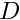
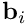
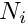
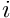
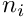
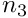

|
PSCF
v1.7.2
|
3.5.2 R-Grid File Format (Prev) 3.5.4 Fd1d File Format (Next)
The PSCF CPU and GPU programs for periodic systems can also read and write files in format that gives the unsymmetrized discrete Fourier transform of the field associated with each monomer type. The required file format is very similar to that used for the coordinate space grid. The file consists of a header and a data section. The format of the header is identical to that used for the coordinate grid format, and includes a list of the number of grid points used in each direction, denoted by ngrid.
The data section contains the Fourier coefficients obtained by a discrete Fourier transform of each field at wavevectors given by
where  is the dimensionality of the crystal (i.e., dim in the header file),  is a reciprocal lattice basis vector,  is the number of grid points along direction , and  is an integer in the range for the first index and for indices . The number of rows in the data section is equal to the total number of such wavevectors, and each row contains values of Fourier coefficients associated with a single wavevector, with coefficients for fields associated with different monomer types in different columnns.
Coefficients for different wavevectors are output in sequential order, using the last index (e.g.,  for a 3D crystal) as the most rapidly varying (inner-most) loop index. This is implemented by a fortran loop of the form
3.5.2 R-Grid File Format (Prev) 3.5 Field Files (Up) 3.5.4 Fd1d File Format (Next)
1.8.11